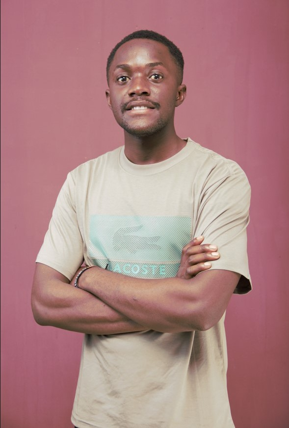
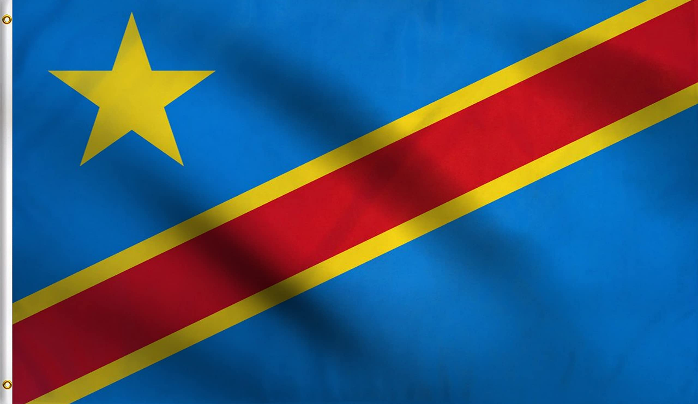

About Me
My name is Banza Kiongo Seraphin, I was born in the Republic Democratic of the Congo and I'm currently studying at BYU and pursuing a degree in web development, in terms of mines there are a lot of mining companies in the region that are contributing to the local economy and providing job opportunities.
Lubumbashi, The Democratic Republic of The Congo
Lubumbashi is the second-largest city in the Democratic Republic of the Congo. It is known for its rich history and cultural heritage, but the sad fact is that the city has faced significant challenges, including political instability and economic difficulties.
